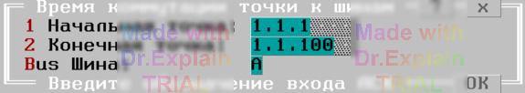

5.1 Время коммутации точки к шинам
Утилита позволяет определить время подключения и отключения точки к шинам коммутатора. После запуска отображается меню, показанное на рисунке ниже:

Параметры меню
- «Начальная точка» — адрес первой точки диапазона проверяемых точек.
- «Конечная точка» — адрес последней точки диапазона проверяемых точек.
- «Шина» — варианты «A» или «B», задающие проверку верхних (A) или нижних (B) ключей РК.
Алгоритм для каждой точки диапазона
Для всех точек из заданного диапазона выполняются команды, соответствующие опциям меню (пример):
$TST1 1.2.1 на шину A1 {begin
$DEV 1.2.1 на: B1
$DEV ПИТ: измерение д.быть Стаб=U Стаб=U
$DEV 1.2.1 на: A1,B1
$DEV ПИТ: ожидание д.быть Стаб=I Стаб=I (20мс)
$DEV 1.2.1 на: B1 (откл от A1)
$DEV ПИТ: ожидание д.быть Стаб=U Стаб=U (20мс)
$DEV 1.2.1 на: НетШин (откл от B1)
$TST1 1.2.1 на шину A1 }end
tвкл=20мс(макс=20мс) tвыкл=20мс(макс=20мс)
После завершения предоставляется итоговое меню (см. п. 6.3).